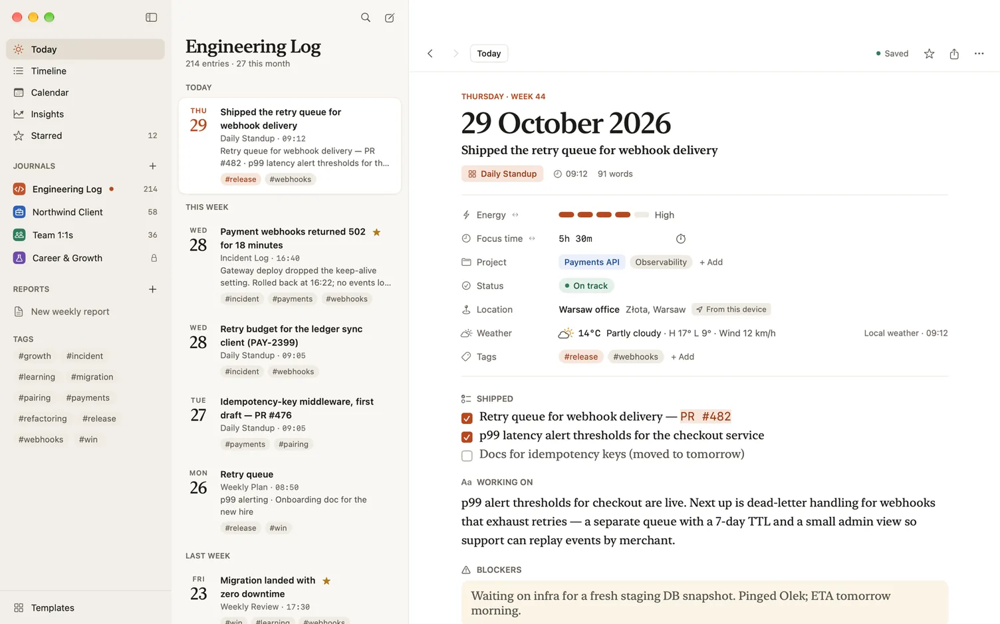
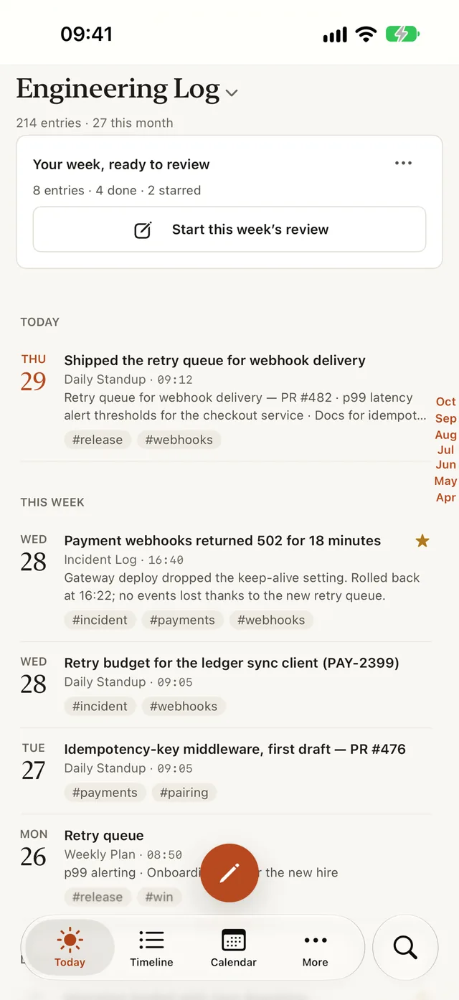
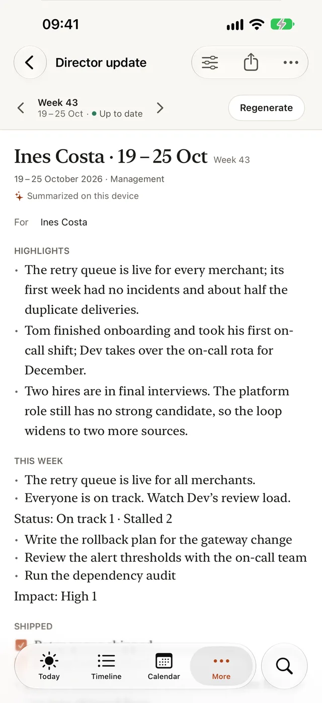

How to write a weekly update people read
PUBLISHED 2026-10-16
A weekly update has a big job for a small document. It tells your manager, and often their manager, what happened, what’s at risk and what comes next, without a meeting. An update written as a log of everything you did is hard to read, so it gets skimmed and forgotten. One written for its reader gets read, forwarded and acted on.
This article covers the shape that works, the habits that keep it short, and the difference between a weekly update for your team and a director update for the people above it. The last section shows how Dayfolio builds both from the week you’ve already written down.
Know who reads it
Before you write, picture the reader:
- Your manager wants progress, problems early enough to help, and what you need from them.
- A director or skip-level manager reads many updates. They want what changed, what threatens a date or a customer, and any decision they need to make.
- Peers want whatever affects their own work.
Write for the busiest reader first. If the director reads only your first three lines, they should still come away with the right picture.
A shape that works every week
Four short sections, always in the same order:
- This week. The headline in two or three lines. If they read nothing else, what should they know?
- Shipped. What’s done and in people’s hands, with links.
- Risks. What could slip, why, what you’re doing about it, and what you need from the reader.
- Next week. The few things you’ll focus on.
Keeping the order fixed matters more than it seems. Readers learn where to look, and you can compare one week with the last at a glance.
Habits that keep it readable
- Lead with outcomes, not activity. “Customers can now export reports as CSV” tells the reader something. “Worked on export” doesn’t.
- Raise risks early, with an ask. A risk raised in week two is a planning problem. The same risk raised in week six is a surprise.
- Name owners and dates. “We’ll look into it” isn’t a plan. “Sam is checking the vendor’s limits by Wednesday” is.
- Link to the detail instead of pasting it. The update is the summary; the ticket, the document or the dashboard holds the rest.
- Keep it to one screen. If it’s longer, cut the activity first.
- Send it at the same time every week, so people know when to expect it.
- Say so when nothing changed. “No change to the launch date; still waiting on legal review” is useful news.
A weekly update or a director update
The two cover the same week for different readers.
- A weekly update for your manager or your team can be fuller. It goes day by day or project by project, says where your time went, and includes the work in progress.
- A director update is shorter and more selective: the four sections above, the most important items first, one list per section for the whole week, and no day-by-day detail.
If you write both, write the weekly one first. The director update is mostly a matter of choosing from it.
Write it from your week, not from memory
On Friday afternoon, Monday is a long time ago. The easiest updates come from a short daily habit: a few lines at the start or end of each day saying what you finished, what you’re on and what’s in your way. Friday’s update then becomes an editing job, not a memory test.
How Dayfolio helps
Dayfolio is a work journal for iPhone, iPad and Mac. You write a short entry each day from a template, and it turns the week into a report.
Write the week as it happens. The Daily standup template, the one a journal made from the Software Engineering pack opens with, has Shipped, Working on and Blockers, with Energy, Focus time, Project and Status above them. The project and what you’re working on carry over from your last standup, so each day starts with them filled in. Star the entries you’d lead an update with.

Review the week on Friday. If a journal has a weekly review with a reminder (the library’s Weekly review suggests Friday at 5 pm), Today shows a card once the reminder has gone off: “Your week, ready to review”, with the week’s counts and “Start this week’s review”. Its menu also has “Make this week’s report”. While you write the review, a This week panel lists what you ticked done, what you starred and what’s still open, and a tap adds a row to the field you’re in.

Make the director update. In Reports, choose + › Director update (Reports is in the sidebar on the Mac and iPad, and in More on iPhone). It covers the last full week (from Friday on, this week) and has the four sections above, filled from your fields by what their labels say:
- Fields labelled Shipped, Wins or Done go under Shipped.
- Blockers, Risks and Concerns go under Risks.
- Fields labelled Next or Plan go under Next week.
- Everything else goes under This week.
You choose the journals and fields it includes. A section with nothing in it is left out, and the titles of your starred entries come first in Highlights, each linking back to its entry. If your template has no field for next week, add a checklist labelled “Next week”: changing a template you added from the library is free.

Or a weekly report. A Weekly report covers one week, grouped by day, by project or by person, with a table of your time when your entries log it.
Address it and narrow it. A report’s For line says who it’s for, and Prepared by, set once in Settings › General, adds your name. You can also keep only the entries for one project, with one person or with one tag.
Send it. Copy it as Markdown and paste it into an email or a chat message, or export it as PDF, Word or Markdown, or share it. Save the report’s setup as a preset, and next week it’s ready to generate again. Making a report and reading it on screen is free; saving presets, keeping reports and sending them come with the purchase.
Ask Siri. “Make this week’s report” works from Siri, Shortcuts, Spotlight and the Action Button: Dayfolio opens on the Weekly report for the last full week (from Friday on, this one), generated and ready to read.
Start with Monday
Next week, write three lines a day. On Friday, the update will be mostly there, and a year of them is good raw material for your year-end self-review.
- See the Daily standup template and the Weekly review template, with every field and a filled-in example.
- Read about Reports in the Dayfolio guide: weekly reports, director updates, filters, the For line and sending.
- Get Dayfolio on the App Store for iPhone, iPad and Mac.